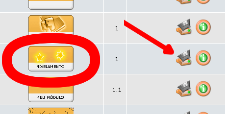
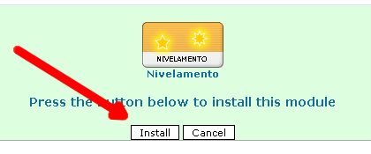
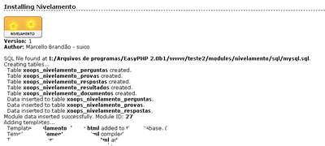
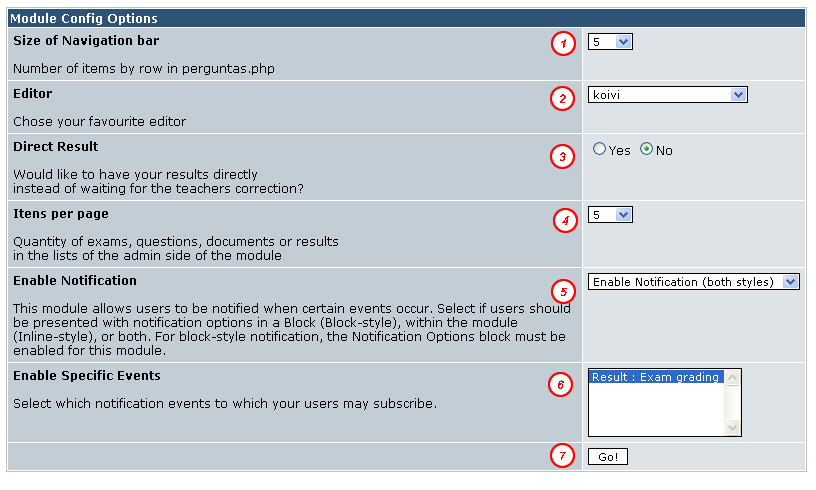
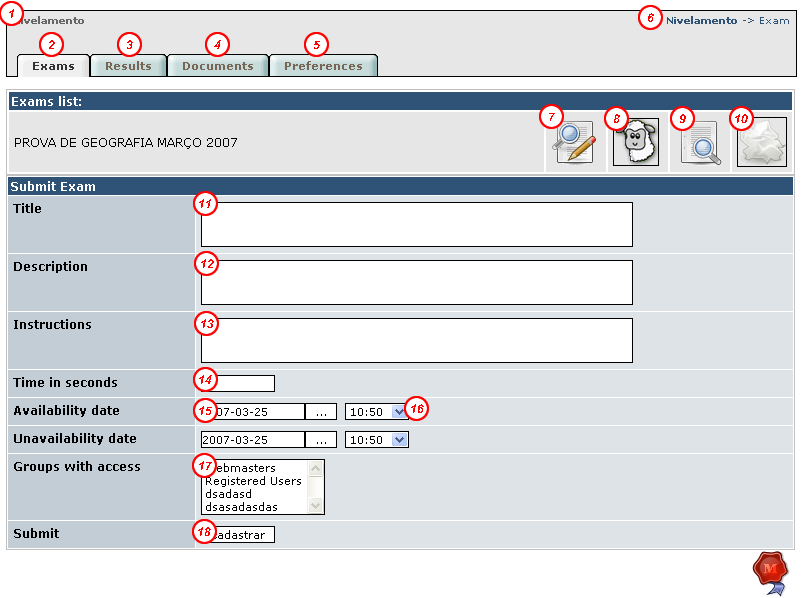
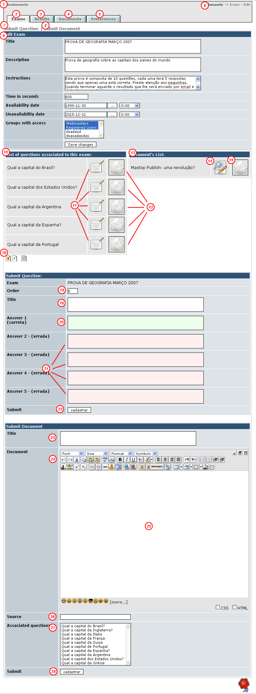

O módulo de assessment oferece a ambos professor e aluno, uma interface agradável e intuitiva para realizar provas. O aluno encontra na facilidade de uma barra de navegação que marca as perguntas que ele já respondeu a segurança que procura na realização da prova. A possibilidade de retornar em uma pergunta e até mesmo alterar a sua resposta prévia configura uma usabilidade imprecedente a este módulo. Do lado do professor, pequenos detalhes tais como a funcionalidade que permite clonar uma prova existente para não ter o retrabalho de redigitá-la caracterizam a singularidade desta ferramenta. Esperamos que apreciem esta ferramenta e que encontram suas dúvidas esclarecidas neste manual.
Marcello Brandão
A primeira coisa a ser realizada é baixar o módulo em um dos sites de suporte ao xoops.
Inicialmente estarei colocando pelo menos em 3: xoops.org xoopstotal.com.br e xoops.pr.gov.br .
Segunda coia a se fazer é verificar se você já possui na sua máquina dois pacotes opcionais do xoops
que
considero
importantes: Frameworks do phppp 1.1 ou superior e class/xoopseditor 1.10 ou superior.
O primeiro é responsável por várias funções de segurança do módulo e umas utilidades que permitem
dar "uma carinha bonita" à administração. O segundo Permite usar um editor de textos muito semelhante
ao word (este tipo de editor é chamado WYSIWYG). Você pode baixar eles
aqui:
Link para o Frameworks
Link para o xoopseditor
Coloque a pasta assessment dentro de /modules/, a pasta do Frameworks (sim com maiúscula) na
raiz do site e a pasta xoopseditor dentro de /class/. Entre como administrador no site e vá na área reservada
ao administrador e no módulo system admin escolha a opção modules.
Duas listas de módulos irão aparecer. A primeira é a dos módulos já instalados, a segunda é a dos módulos
ainda não instalados. É nesta segunda lista que estará o módulo assessment. clique no botão instalar conforme
imagem abaixo.

Agora se tudo correu bem uma tela de confirmação irá se estamapar na tela parecendo com a imagem abaixo:

Novamente se tudo correu bem , uma tela com o log de tudo que foi realizado vai se apresentar. Algo como esta abaixo:

Pronto o seu módulo foi instalado com sucesso e você pode ir criar sua primeira prova ou prestar a prova de exemplo sobre as capitais
do mundo que vem já instalada.
Assessment permite que você o ajuste para diversas finalidades e de acordo com estas você deverá ajustar alguns parâmetros. Para alterar os parâmetros do módulo simplesmente vá no menu preferências do módulo de assessment. A página abaixo irá se abrir. Configure-a conforme suas necessidades.

Item 1: Na tela de perguntas você possui uma barra de navegação que permite que você navegue entre as diferentes perguntas da prova marcando aquelas que o aluno já respondeu. Quantos itens vão aparecer nessa lista antes de quebrar a linha é definido neste item. Isto permite que você use o Assessment em qualquer resolução.
Item 2: O editor dos documentos pode ser tanto um editor simples como pode ser um editor elaborado que permite inserir até mesmo videos do youtube. Eu recomendo que usem o editor koivi por ser este o recomendado pela equipe xoops.org, porém eu sugiro também que testem o mastop_publish que vai em anexo dentro da pasta extras por possuir mais funcionalidades e ser feito por um brasileiro (topet05)
Item 3. Quando o aluno termianr de fazer a prova ele pode tanto ter que aguardar por um sinal verde do professor informando que o resultado já saiu, como ele pode ter o resultado imediatamente. Tudo vai depender de seu caso de negócio. As vezes é interessante que o aluno só saiba de sua nota em uma data específica mais tarde, outras vezes é ele precisa saber imediatamente. Vamos ver o que é emlhor no seu caso.
Item 4. Na parte da administração existem várias listas que exibem perguntas documentos provas e resultados. Aqui você define quantos itens devem aparecer por página. Recomendo o uso de 5 mesmo, por não pesar para o servidor.
Item 5. Esta é conhecida dos usuários xoops. Aqui você define se quer ou não que os alunos possam escolher de serem comunicados de que o resultado de sua prova saiu.
Item 6. Esta também é conhecida dos xoopers. Neste item de configuração você escolhe quais eventos estão habilitados. No caso de nosso módulo por enquanto apenas um evento existe portanto não tem muito sentido , mas quem sabe na próxima versão.
O primeiro passo a ser tomado para se criar uma interação entre o aluno e o professor é a criação da prova. Sem prova criada não há como o aluno ter um resultado o que parece óbvio.
Para se entender como o módulo funciona há de se entender alguns termos . A prova é formada por perguntas, documentos, resultados e atributos próprios. A primeira coisa a se fazer para criar a prova é cadastrar os atributos próprios desta. Veja a tela de cadastro e sua explicação:

Item 1 : Uma ligação direta com a parte do aluno , onde o aluno encontra as provas.
Item 2: Uma ligação para a página atual onde se cria, edita, clona e exclui provas, além de poder consultar os resultados de uma determianda prova.
Item 3: Uma ligação para a tela que permite acessar os resultados de todas as provas confundidas.
Item 4: Uma ligação para a tela que permite acessar os documentos de todas as provas confundidas
Item 5: Uma ligação para a página de configurações vista no tópico 3 deste tutorial
Item 6: Um texto que serve para você se situar na parte de amdinsitração , ele indica onde você está. (breadcrumps)
Item 7: Link que permite Editar a prova. Além de editar os atributos principais da prova você tem acesso Às tela de editar e cadastrar tanto documentos quanto perguntas.
Item 8: Link que permite "clonar" uma prova. Clonar uma prova significa copiar além dos atributos da prova, todos os seus documentos e todas as suas perguntas. Cabe ressaltar que a atribuição dos documetos às perguntas não é copiada e deve ser realizada manualmente.
Item 9: Exibe uma tela com todos os resultados daquela prova em especial e alguns dados estatísticos como nota mais alta , nota média...
Item 10: Excluir a prova. Esta operação exige uma confirmação pois ela apaga além dos atributos da prova , todas as perguntas , respostas , documentos e resultados relacionados àquela prova.
Item 11: Título da prova. Campo para que se defina um título para a prova. ex: PROVA DE GEOGRAFIA
Item 12: Campos para cadastro da descrição da prova. Informações talvez sobre a matéria que está sendo verificada.
Item 13: Campo para cadastrar intruções da prova. Sugiro que se coloquem todas as regras aqui (tempo de prova, se prova é com ou sem consulta etc...)
Item 14: Tempo da prova em segundos. Depois que o aluno começar a prova quanto tempo ele tem antes de ela se fechar sozinha?
Itens 15 e 16: Esses campos permitem definir dia e hora de inicio e de fim da dosponibilização da prova. Antes o aluno não consegue fazer a prova e depois também não. Clique no botão para ver o calendário.
Item 17: Grupos que poderão fazer a prova. Enquanto estiver preparando a prova não coloque nenhum grupo ou então altere a opção anterior para que a prova não fique disponível para o aluno. O risco é o aluno poder fazer a prova antes de ela estar pronta.
Item 18: Botão para enviar os dados dos atributos das provas.
Depois de ter cadastrado os dados básicos da prova você poderá cadastrar as perguntas da prova. Para isso na tela que se abre após envio dos dados dos atributos da prova (pode chegar nessa janela também através do item editar prova na janela explicada no passo anterior) Clique no link para cadastro de pergunta ou role a barra de rolagem na lateral de seu browser até o formulário de cadastro de pergunta. Este formulário possui 7 campos conforme figura abaixo. Preencha-os e envie sua pergunta. Repita a operação quantas vezes for necessário. Aqui acho que só cabe destacar o campo ordem que é importante no sentido em que ele permite que se defina a ordem em que as questões serão apresentadas na prova.
Os documentos que você irá cadastrar no módulo deve servir de referência para algumas perguntas. Questões por exemplo de interpretação de texto , requerem uma funcionalidade assim. Para se acessar o formulário de envio dessas informações clique em enviar documentos ou role a barra de rolagem a direita de seu browser para encontrá-lo. O formulário exibe além de seus campos básicos(detalhamento abaixo) um campo onde você pode escolher com o botão esquerdo do mouse e a tecla ctrl pressinados ao mesmo tempo as perguntas que vão apresentar esta pergunta antes.

Itens 1 à 6: Ver tópico 4.a deste tutorial.
Item 7: Link para âncora do formulário de cadastro de perguntas
Item 8: Link para âncora do formulário de cadastro de documentos
Item 9: Formulário de editar dados básicos dos atributos , dúvidas se reportar ao tópico 4.a
Item 10: Lista de perguntas da prova exibida
Item 11. Link para poder editar os dados de uma pergunta
Item 12: Link para excluir uma pergunta da prova (as respostas associdas também são excluídas)
Itens 13,14,15: Semelhantes aos itens 10,11,12 só que para documentos
Item 16: Barra de navegação das perguntas
Item 17: Não existe este item :D
Item 18: Campo para ordem da pergunta. Este campo deve ser um número inteiro. Quanto mais baixo antes a pergunta virá na prova e quanto mais alto, mais tarde a pergunta virá na prova.
Item 19: Campo de título da pergunta: ex: Qual a capital da Italia
Item 20: Resposta correta
Item 21: Respostas incorretas
Item 22: Botão para cadastrar a pergunta
Item 23: Título do documento
Item 24: barra de ferramento do editor de texto
Item 25: Texto da prova. Pode-se copiar o texto do word ou da internet e colar aqui neste editor que ele quarda a frmatação (no caso do koivi)
Item 26: Se for um texto da internet a fonte do texto
Item 27: Quais perguntas devem apresentar o texto do documento antes delas? Use o ctrl ao mesmo tempo que clica nas perguntas para escolher mais de uma . Para deselecionar uma clicque novamente nela (sempre com o ctrl apertado ao mesmo tempo)
Item 28: Botão para cadastrar o documento
Agora basta lembrar de atualizar os atributos da prova para liberar ela para os usuários. Acerte a data e ou os grupos e pronto!
5 continua em outra versão....
8 Créditos
Os créditos deste tutorial vão para Marcello Brandão. Se quiser ajudar terminando este tutorial entre em contato com ele no xoops.org (suico) ou no xoopstotal (marcellobr).